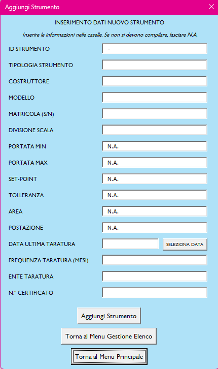
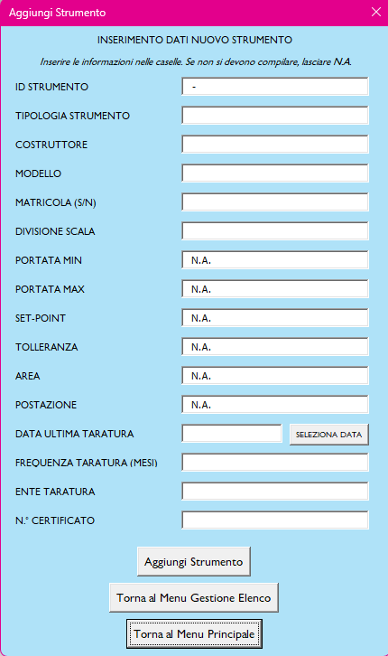
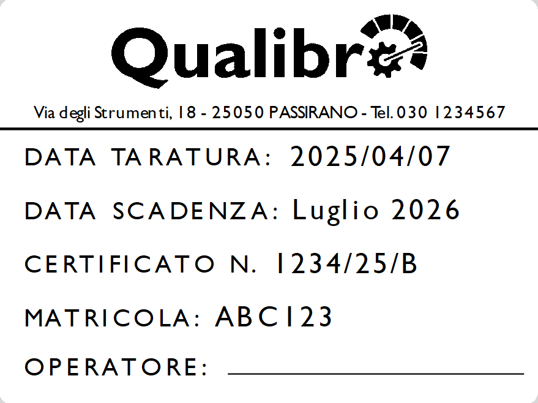
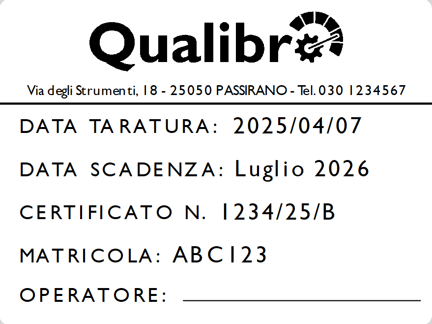

Software Gestione Strumenti di Misura
Questo progetto riguarda lo sviluppo di un software dedicato alla gestione degli strumenti di misura all’interno di un’azienda. L'obiettivo è quello di semplificare la gestione, migliorando la precisione e riducendo i tempi ed i costi di intervento.
Funzionalità principali:
- Gestione facile ed intuitiva degli strumenti di misura
- Monitoraggio dello stato di taratura degli strumenti
- Stampaggio facile, rapido ed economico di etichette di taratura da applicare sugli strumenti
Tecnologie utilizzate:
- Microsoft Excel
Vantaggi:
- Il software, se utilizzato regolarmente all’interno dell’azienda, migliora l’efficienza e la gestione degli strumenti di misura, riducendo i costi di gestione.
- Microsoft Excel è un software che ogni azienda ha già a disposizione, quindi non servono ulteriori programmi di terze parti per la gestione degli strumenti di misura.
- Spesso nelle aziende le etichette di taratura sono un vero e proprio "art-attack", onerose in termini di tempo e soldi. Il metodo di stampa delle etichette utilizzato da questo software prevede una stampante economica che funziona con etichette di facile reperibilità.
Screenshots del software:


 



 
